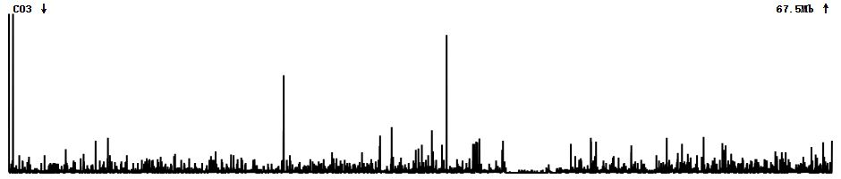

如何从基因组序列中鉴定端粒
端粒位于染色体末端，是染色体结构中的保守功能区域，在维持基因组稳定性上发挥重要作用，端粒由高度保守的短串联重复序列（绝大多数陆地植物为“CCCTAAA/TTTAGGG”）组成。随着三代测序技术以及组装算法的发展，实现一个物种的T2T（Telomere to Telomere）基因组组装越来越容易。组装出全部或大多数端粒序列意味着较高的基因组完整性，然而如何在组装后鉴定出端粒的位置呢？
tidk和quarTeT是我用过的两个比较方便、快速的工具。然而在实际应用过程中我也发现了一些问题，这两个软件只是按照滑窗的方式在每个窗口中鉴定端粒重复序列motif的数量，将富含端粒motif的窗口视作候选端粒区域，并不关心这些motif是否是串联在一起的。例如下面应用tidk的一个例子，在该染色体上由4个显著的端粒motif信号，但在360 kb左右只是一段包含“CCCTAAA”的串联重复，并非是端粒序列，quarTeT软件也有同样的问题，因此有鉴定到假的端粒结构的潜在可能。

C03 TRF TandemRepeat 359867 369931 3665 . . ID=TR320552;PeriodSize=25;CopyNumber=402.8;ConsensusSize=24;PercentMatches=70;PercentIndels=15;Consensus=TTAAACCCTAAACCCTGCCTAGGG
C03 TRF TandemRepeat 359867 370385 3308 . . ID=TR320554;PeriodSize=49;CopyNumber=213.4;ConsensusSize=48;PercentMatches=71;PercentIndels=14;Consensus=TTAAACCCTAAACCCTGCCTAGGGCTAAACCCTAAACCCTCTCTAGGG
TRF（Tandem Repeats Finder）是鉴定串联重复序列的经典工具，当然也可以鉴定到端粒motif的串联重复且较为准确，只是在上万条结果中挑出端粒序列略显麻烦。此处推荐一个工具find_telomere_from_TRF.py可以较为方便地从TRF结果中筛选出端粒序列，该脚本可以从Github下载。使用前需要先用trf2gff将TRF结果转换成gff3格式文件。
1 | |
1 | |
当然这个工具还有进一步修改的空间，首先可以输入染色体长度信息，检查筛选的端粒序列是否在染色体末端，其次可以添加可视化功能，展示染色体和端粒位置。另外，TRF运行速度并不快，如果就想省点事用tidk，建议用search功能，且指定端粒基序为至少两个重复，即“tidk search --string CCCTAAACCCTAAA --output out --dir ./ $genome”，可在一定程度避免上述问题。